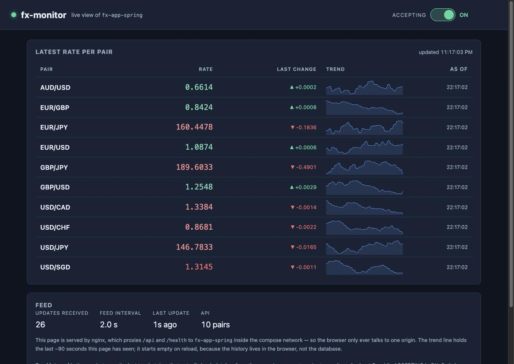

You start with a jar and a laptop full of things you installed by hand. You finish with three containers, one database, and a pipeline that ships two images to a registry behind a human who has to say yes.
These are C4 container diagrams. In C4 a "container" means a separately runnable thing — an app, a database, a web server. It lines up almost exactly with a Docker container here, which is convenient but a coincidence.
step-01 · ~65 minfx-app-spring/Dockerfile (multi-stage) and .dockerignore. The app runs with no JDK, no Gradle and no MySQL involved./health is green while /api/rates is a 500. "Up" and "working" are different claims — the pool is lazy. We deliberately do not fix the database here.step-02 · ~60 mindocker-compose.yml and .env.example at the workspace root. The database is part of the system now, not part of your laptop.down keeps the volume, down -v destroys it — and the seed only re-runs against an empty data directory. That one fact explains most "I changed the seed and nothing happened" bugs.step-03 · ~45 minfx-monitor/ as a sibling folder and a third service on host port 3000. Your API's build context did not grow by a byte.Bind for 0.0.0.0:8080 failed: port is already allocated. Container ports are private; published host ports are shared. It is always the left-hand number.step-04 · ~45 min.github/workflows/ci.yml at the repo root, running ./gradlew build on every push and pull request against your existing test suite.step-05 · ~45 minci.yml narrowed to pull_request plus a build-only images matrix; a new cd.yml on push: [main] chains build → publish → deploy, publishing two images — fx-app-spring and fx-monitor.deploy sits behind environment: staging with a required reviewer — the run visibly pauses in Waiting until a human approves. GHCR owners must be lowercase or the push 400s.
docker compose up, a pipeline that verifies every push, and two images on GHCR behind a deploy a human had to approve.fx-app-spring ticks its own feed on a schedule, no second app needed.